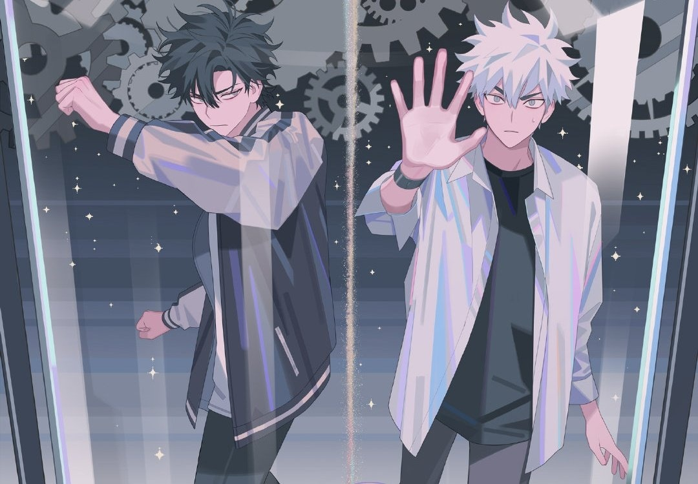

Anime Donghua recommendation: Shiguang Dailiren
September 10, 2021
SPOILER ALERT!!!
Vietnamese version
What is that D-D-Donghua?
Have you known that Shiguang Dailiren (or Link Click) has claimed the 21th best anime series on MAL and it's not even an anime? We all know 2021 is a filled with great shows such as Mushoku Tensei, or Eighty-six, but they could not rival the delivery of Shiguang Dailiren. The concept is not new: Cheng Xiaoshi - the one has the ability to travel back in time by replacing the person who took the photo. He partnered with Lu Guang who could see all the events happens within 12 hours of the photo. Together, they receive the requests to sneak the information or to deliver unspoken words. With his ability, Lu Guang provide Cheng Xiaoshi the guidance so that the current timeline is not affected when his partner carries the missions. This is a new point as all the anime about time-traveling is abusing the time paradox to create their story where the characters only want to manipulate the past for the future they want: Stein; Gate , ERASED, or currently, Bokutachi no Remake .
Shiguang Dailiren's cover photo.
What is good?
This shows probably has the best first episode of all time. It covers both things: give a complete story (yes, a whole damn complete story) and also being able to introduce you all the characters, their abilities and the rules. But then you wonder why a first episode must gives a complete story? Yes, the show walks us through separated stories, but in the end, where all things are connected and the show starts to assemble with a clear story, it is gorgeous.
On the other hand, each stories participates on the development of Cheng Xiaoshi because he inherits the feelings and memories of the person he gain control of when he do time-traveling. Having a miserable childhood, he empathizes those feelings which lead to his actions disobey Lu Guang's guidance. It stir up our curiosity as we all want to know what will happen in the future when he deflect the past Moreover, the good use of cliffhanger in the end of each episode lead us to continuously watch the series. Do you know any masterpiece abuse the cliffhanger? Romance of the Three Kingdoms. And guess where is it from? Yes, CHINA. So how about giving Shiguang Dailiren a try?
Last but not least, both the OP and ED were phenomenal. I normally skip the both when watching anime, but not in this case. So please, give it a shot, and you won't waste your time 😤